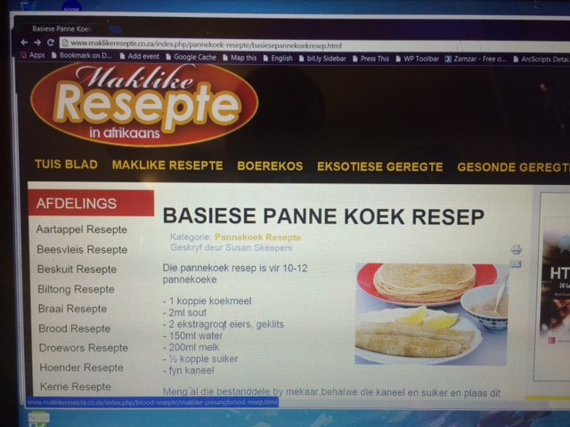

| Week 2 | Week 3 | Week 4 | Week 5 | Week 6 |
|---|
I spent a lot of time this week trying to figure out how to lay out a page using CSS. The look I was going for is to have a large image fill the browser window so that a page visitor gets a big, bold picture to look at. Then, after the visitor scrolls down, the content is revealed. I spent so much time reading CSS tutorials, searching Google and StackOverflow, that I started to run out of time. I had some interesting leads on new content for this weeks page, but in the eleventh hour, while desperately trying to get my header text to appear on top of my header image (while at the same time getting all my other text to flow naturally below the image) I temporarily linked to an existing image. I picked one at random. It was a picture of a rolled pancake. Over and over I edited the stylesheet, then switched to the browser and refreshed the page. Over and over the image of the rolled pancake presented itself to me. The image soaked into my conciousness. It occupied my thoughts. It made me hungry. I thought about pancakes as I scrolled through search results. Cinnamon spiced the tutorials as I was disappointed again and again, repeatedly failing to achieve the effect I wanted.
When I finally figured it out is was an epiphany. A moment of euphoria soaked in dissolved sugar. It was delicious on my tongue. I sat and looked at the white letters written on top of the image of the pancake. I sat and looked at the pancake. I slowly realized that I was already looking at the right image. Instead of changing the image to reflect a new theme for the week, I changed the text to refer to the pancake. The buddhists have this concept of "right livelihood", meaning there is some way that is right for you to earn your livelihood, and if you search earnestly enough and wait patiently enough, it will come to you and you will be satisfied. This week I'm practicing "right themehood" and with enough patience and waiting, the pancakes will come to me and I will be satisfied. Pancakes are food for the soul, comfort food, born in poverty and want, providing calories and sustenance for the hungry, and solace for those who seek peace. Food is for more than eating. It is for healing.

It turns out the trick to getting the text to appear on top of the image is to set the CSS property position:absolute on the paragraph element, and to fix it at the right place on the page. Then the text is taken out of the ordinary flow of the page, and the image moves up to the top in the place where the text was before. In turn, the image is set to width:100% and is placed in a container which is also width:100%. This fills up the browser window nicely. It's also responsive, so when the browser is resized, the image automatically resizes too. I found the right position for the text through trial and error. Eventually you get the elements organized and nicely balanced. Things start to come together and blend into a pleasing aspect. Like pancakes, which are similarly make of simple ingredients that blend together through the chemistry of cooking to become delicious sweet treats that go very well with black coffee.
Pancakes are made with ground wheat flour, mixed with milk and water. Eggs are added to bind the batter as it cooks. You can add a small amount of bicarbonate of soda and baking powder to give it a little bit of fluff, or use self-raising flour. A pinch of salt can bring out the flavor of the food and give it body. Cook the batter in a well-seasoned cast iron pan. With practice, you don't need a recipe. You just remember what ingredients to use and how much of each to add. The proportion of ingredients, or exact list of ingredients used, might change. This makes the recipe more your own and personalized. The people you cook for come to learn what your pancakes taste like, and to prefer your cooking. Animals are pure. They are simple. You feed them and care for them therefore they love you. There is nothing complicated about it. Humans play games and make things complicated. Feed your dog pancakes.
Click the links in the table above to view other weekly page submissions.